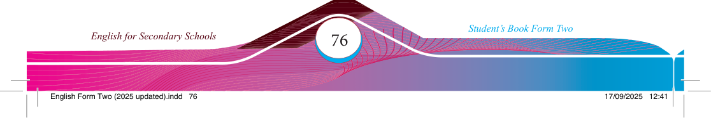

(c) Practise the following dialogue to improve your skills in giving opinions. Identify the opinion constructions in the dialogue.
Rehema:
Hi Giovani, what’s your opinion about town life compared to
village life?
Giovani:
I think town life is better because of the improved social services
available.
Rehema:
I agree with you, but I’m of the opinion that living in the village
has its benefi ts. For example, we do not have to pay for water in our village since it’s freely available from rivers and wells.
Giovani:
I see your point, but I’m concerned that water from rivers and
wells can lead to health issues, like diarrhoea and typhoid, which are common in the village.
Rehema: That might be true, but I don’t think it is fair to generalise. Many
people boil or treat water before using it.
Giovani:
Mmmh! I get the impression that you are being too defensive.
Additionally, where do they get the fi rewood to boil the water? I strongly believe that they are cutting down too many trees.
Rehema: I agree with you on that point. That’s why I think it’s important for our villages to have access to affordable and reliable gas and electricity. To me, gas and electricity is the best solution.
Giovani:
That’s an excellent idea, but don’t you think that might be too
expensive for the villagers?
Rehema: Maybe, but I believe that the government is working on providing gas and electricity services to villages at a reasonable cost.
Giovani:
You’re right.
Adapted from TIE (2018): English for Secondary School Form Two.
(d) Give your opinions on the following topics using the opinion constructions of your choice.
1. Parents should check their children’s progress at school every day.
2. Corruption is an enemy of progress.
3. Students should reduce their use of digital devices and social media to maintain mental well-being.
4. Respecting different opinions may undermine unity in a community.
5. Posting videos and comments on social media can be done without considering others’ feelings.